972efcf8a before; a5c75e0ad after. Regtest, dedicated arkui.debug. Opening 4f5809d92 and C1/C2 were not exercised on phone. No full parity claim.
| Home — dark Same actual Board-funded Ark balance; global layout and fiat follow-ups remain. | 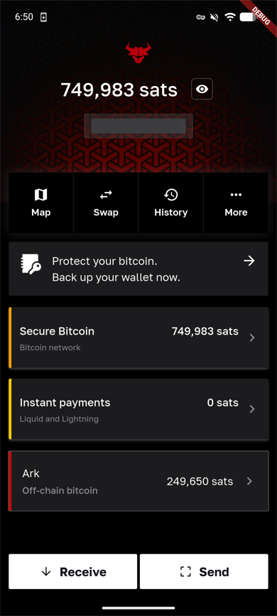 | |
|---|---|---|
| Account — dark Actual funded account before the later renewal and exit. | 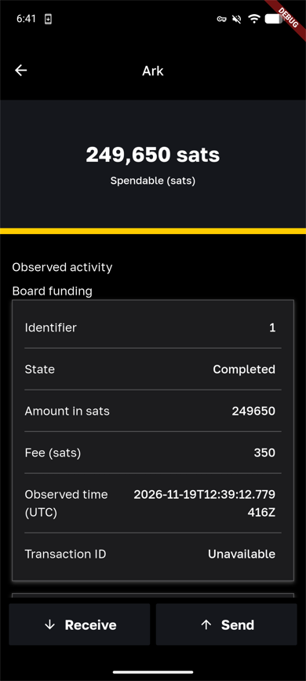 | 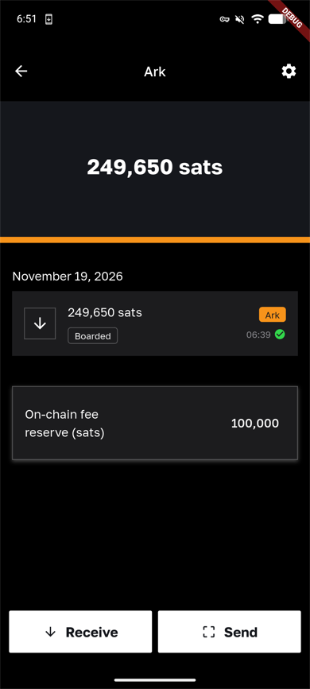 |
| Account — light Different observed balances: 249650 before; 100000 new incoming after an actual exit. Layout evidence, not balance equality. | 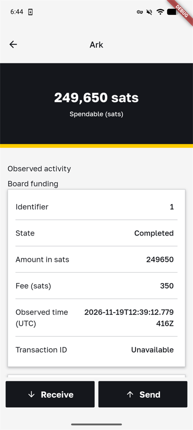 | 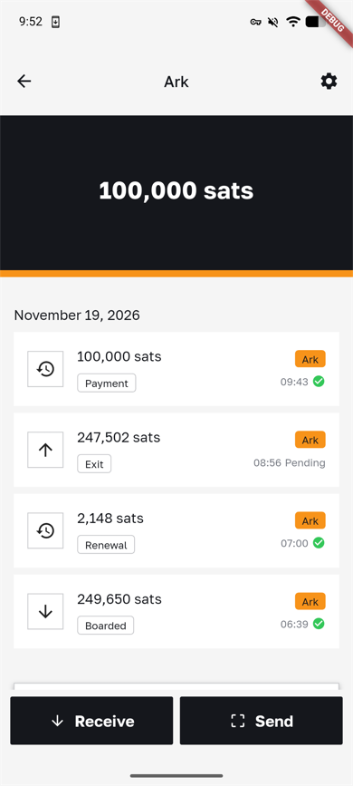 |
| Receive — dark Real generated Ark destination, not a Bitcoin Receive fixture. | 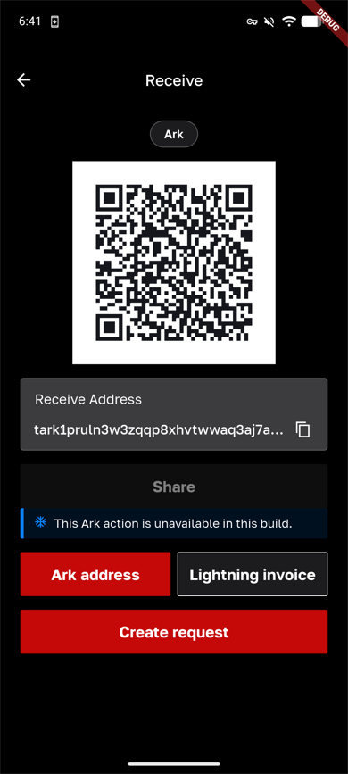 | 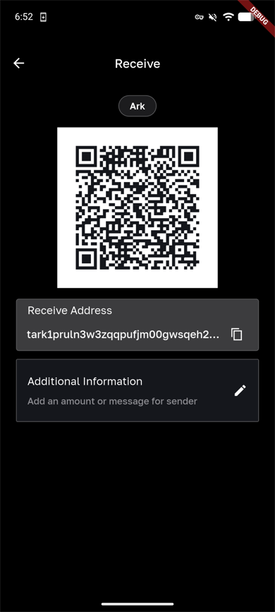 |
| Settings — dark Settings remain under Settings > Wallet. | 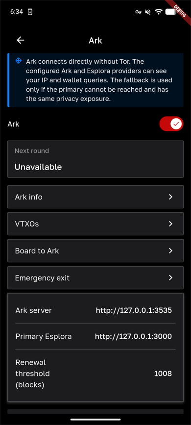 | 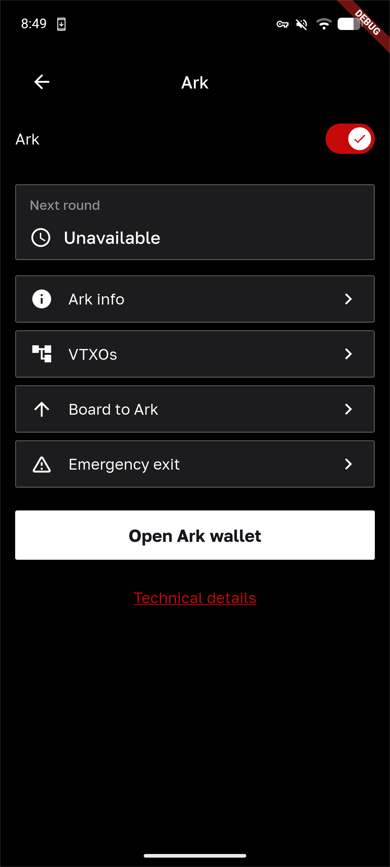 |
| Send — light Real route; no camera scanning proof. | 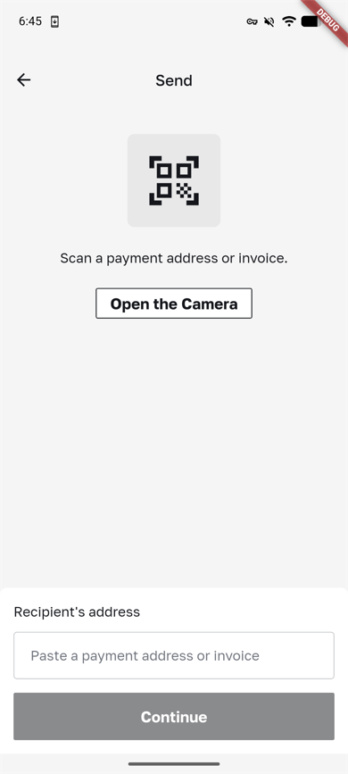 | 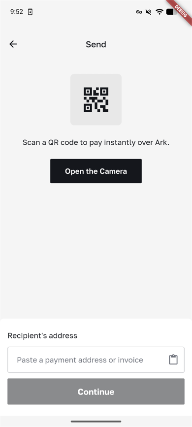 |
| Send amount — light 10000 sats entered; the before self-address and after isolated regtest peer differ. | 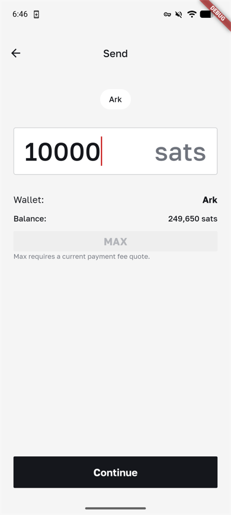 | 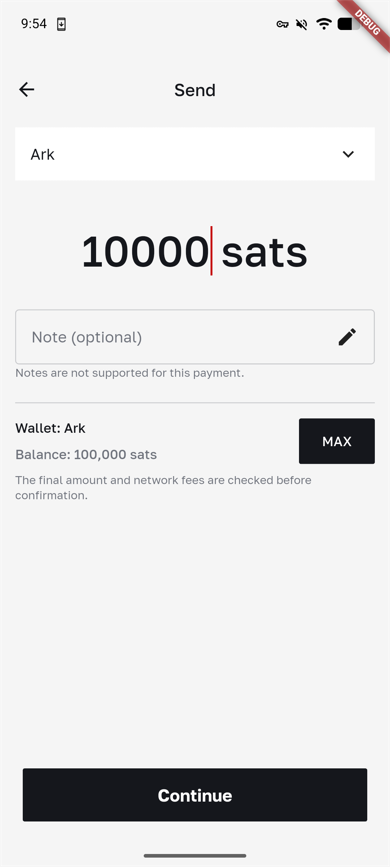 |
| Send review — light Different actual quotes and destinations; exact quote-bound amount, fee, total and full address remain visible. | 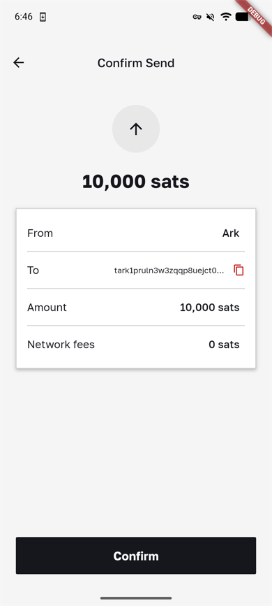 | 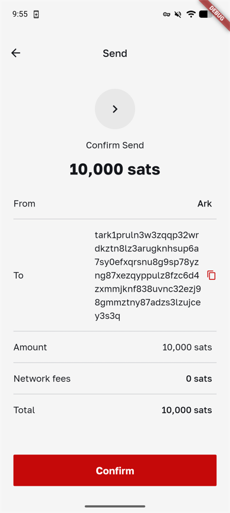 |
| VTXOs — dark Before locked and after spendable are different real states; no state equivalence claim. | 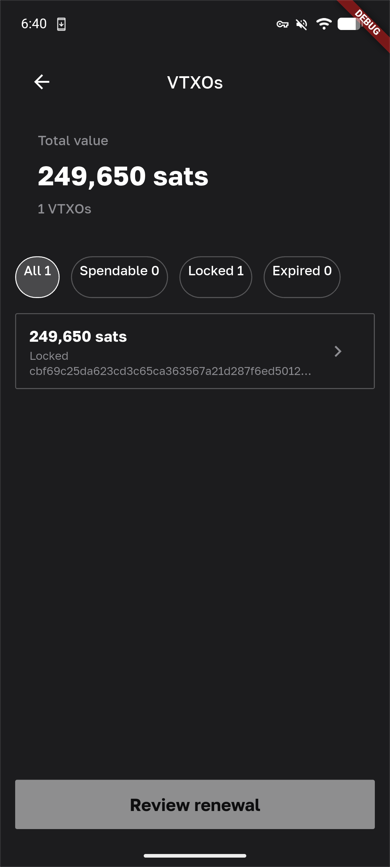 | 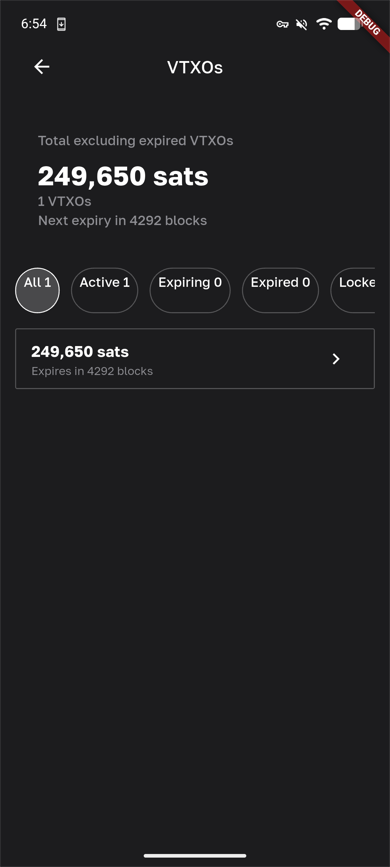 |
| Choose exit — dark Both phone versions precede C1 persistent labels in the opening source. | 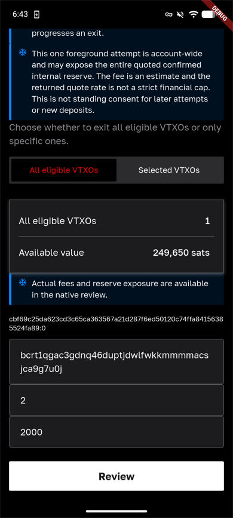 | 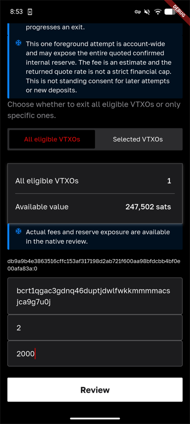 |
| Review exit — dark Different actual balances and quotes after renewal; no submission implied by a review picture. | 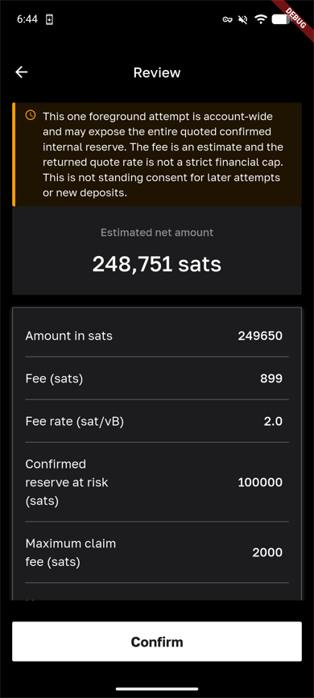 | 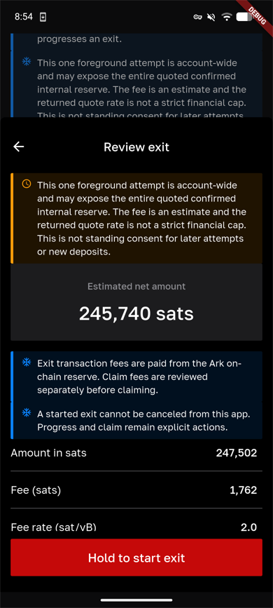 |
| Exits empty — dark Actual empty list, never substituted for a NoFunds state. | 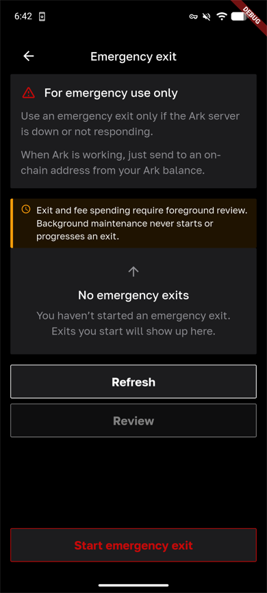 | 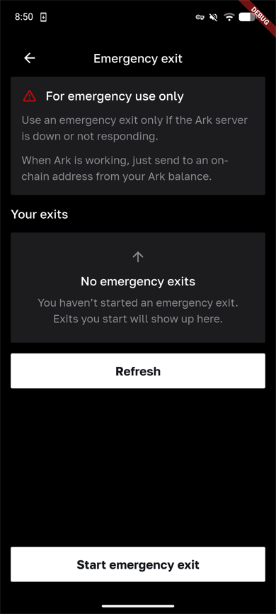 |